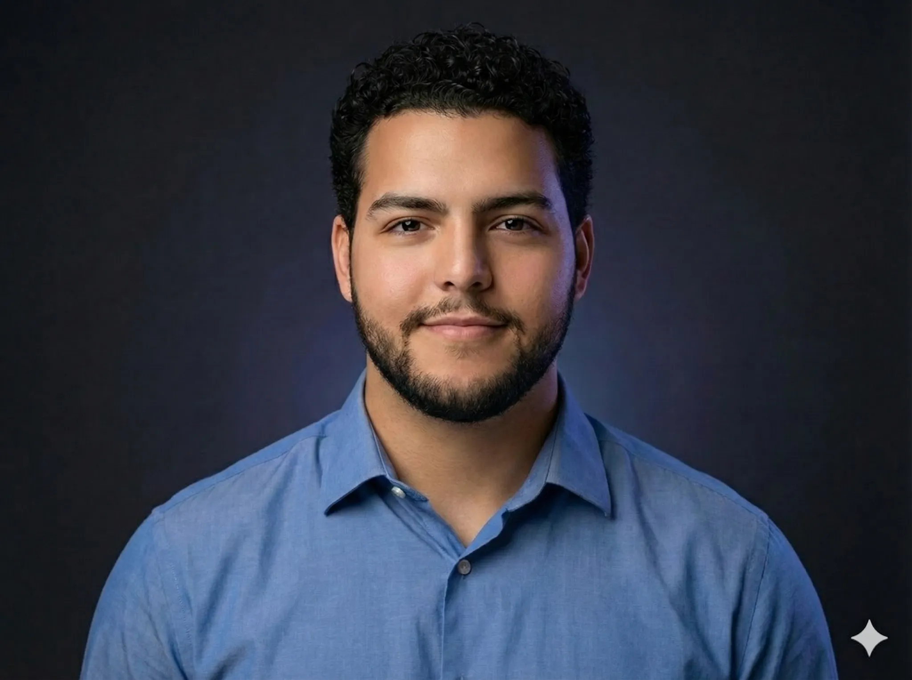

ASIC Verification
PyUVM · cocotb · SystemVerilog UVMCOMPUTER SYSTEMS ENGINEERING // CARLETON UNIVERSITY
Omar Alhalawani
Computer Systems Engineering student at Carleton University. I work on ASIC verification, RTL, embedded systems, and the tools around them. That means testbenches, waveform bugs, FPGA logic, sensors, and systems that have to work outside a slide deck.
OTTAWA, CANADA // CARLETON UNIVERSITY //
VERIFICATION_CORE ACTIVE
CLK_IN
100 MHz
100 MHz

RTL
UVM
PYTHON
I/O // 08 DATA_BUS // READY
Digital Design
SystemVerilog · Verilog · RTL · FSMsEngineering Automation
Python · Bash · Linux · GitEmbedded Systems
C/C++ · microcontrollers · sensors · DAQ01 // LATEST SIGNAL
Verification methodology, in practice.
CIENA // OTTAWA, ON // SUMMER 2026
ASIC Engineer I Co-op
Digital Verification Methodology
Investigated alternative ASIC verification approaches and AI-assisted workflows within Ciena’s Methodology & Automation organization.
- Researched PyUVM and cocotb alongside SystemVerilog UVM.
- Developed self-checking testbenches from RTL specifications and verification plans.
- Documented findings and presented recommendations to engineers and management.
02 // SELECTED WORK
Selected work


03 // ENGINEERING STACK
From software tools to physical systems.
APPLICATION / AUTOMATIONPYTHON / C / C++
VERIFICATIONUVM / TESTBENCHES / WAVEFORMS
DIGITAL DESIGNRTL / SYSTEMVERILOG / VERILOG
HARDWAREFPGA / ASIC / EMBEDDED SYSTEMS